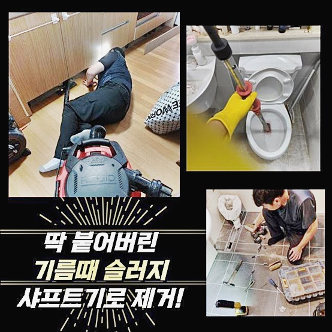
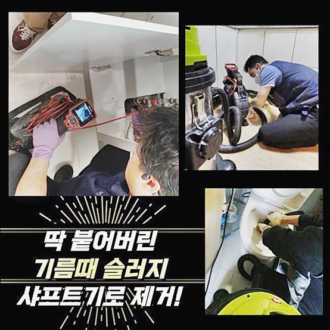
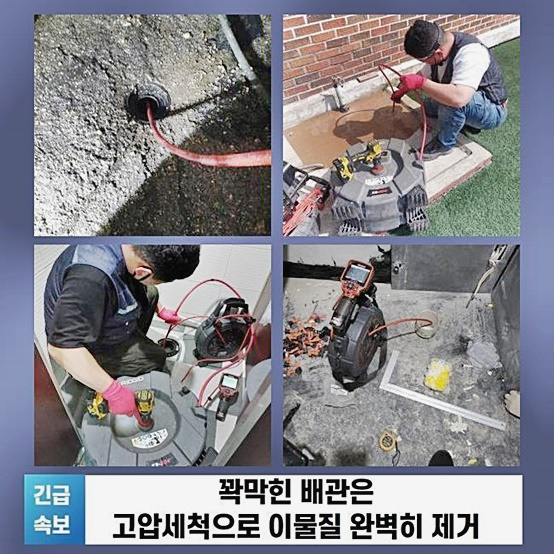
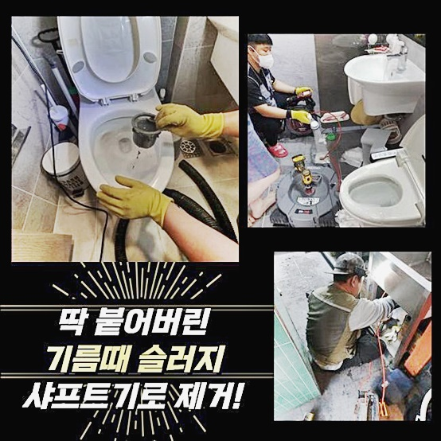
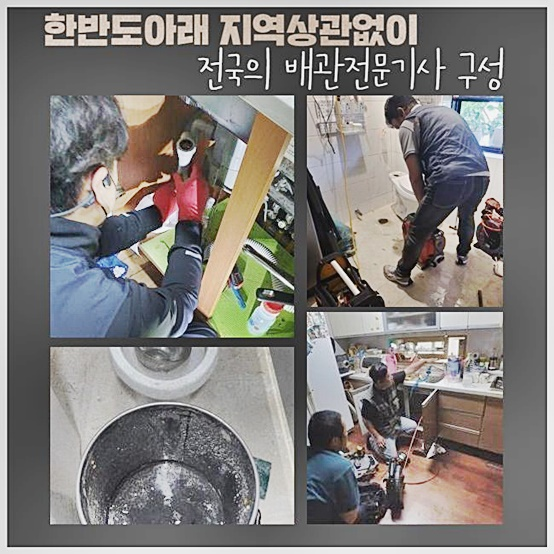
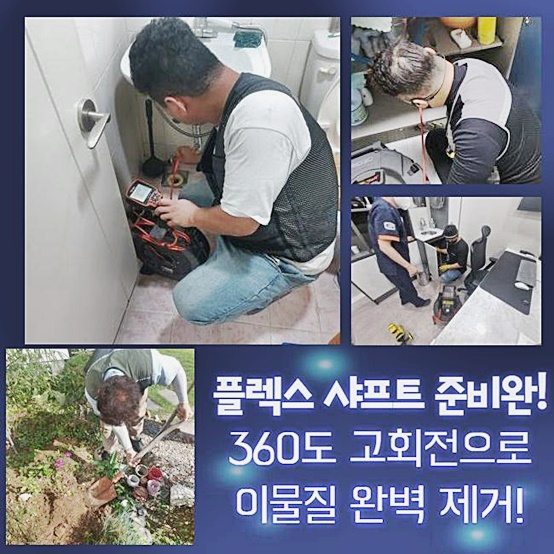
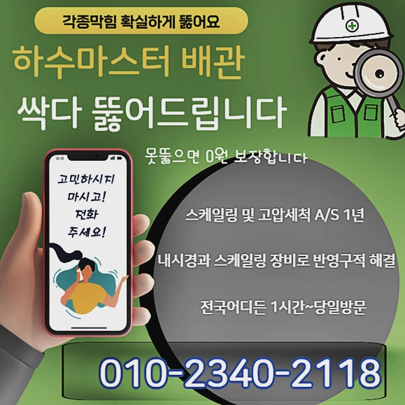

🏠 아산 초사동씽크대배수관막힘 둔포면 배관내시경카메라 누수
아산 싱크대막힘 전문 시공 후기

📋 작업 개요
- 위치: 아산
- 서비스 유형: 싱크대막힘, 하수구막힘, 배관막힘, 누수수리, 역류해결, 뚫는업체, 설비공사
- 작업 일시: 2024. 9. 23. 10:40
- 업체명: 하수구수사대 (010-5615-2118)
🔍 문제 상황
아산 초사동씽크대배수관막힘 둔포면 배관내시경카메라 누수
저희들은 주말상관없이 고객님께서 의뢰주신다면 신속히내방해 작업해드릴수있죠
의뢰자의편의를 첫째로생각해 신속히응대할 준비를하고있죠
사소한부분도 신경써서 깔끔히 처리하고자 노력합니다
근래에 방문한현장은 긴급했던 상태였지만 고객의요청에 신속빠르게 대응할수있었죠
최신기기를 모두갖춘채 방문했으므로 효율적인 방식으로 해결할수있었어요
고객분께서도 수차례 문제를 겪으셨지만 오늘처럼 심한막힘과 물이넘치기까지 하여 신속히해결할 필요가있었던 장소였어요
현장경력을통해 얻은기술이나 노하우로 문제증세를 깔끔하게 마무리해볼수 있었답니다
다음날에 문제없이 운영하실수있도록 만들어드렸답니다

🔎 원인 분석
💡 전문가 진단: 정밀 진단 장비를 사용하여 슬러지의 고착 여부를 판명하고 타격/세척 작업을 실시했습니다.
긴급한 상황이라해도 일상생활시 영향이 가지않도록 성심성의껏 작업하는게 마땅하다고 생각합니다!
다음에 방문한곳을 간단하게 안내해볼게요
우선고객께 인사를드린후 내부로이동해 문제를 보였던곳을 찾았죠
보일러실부분에 발현한 역류때문에 물이넘친 상황이었어요
2차적인 피해로 연결되지않으려면 빠른수리가 필요했으므로 저희들은 주의해서 수리해드렸답니다
결과를봤더니 조속한처리를 완료했고 배수상황이 원래의상태로 복구되었어요
신속한해결이 필요한곳에서는 믿음이가는 전문인을 호출하는것이 중요하답니다
업체를고를때 최신식기계를 보유했는지와 여러현장경험을 갖추고있는지도 꼼꼼히 체크해보셔야 한답니다
저희들의경우 전문도구들과 풍부한경험을 통하여 처리해드리고있죠
이번장소는 하수관내부에서 일어난 사례였는데 시간이흐를수록 추가피해가 발생할수도 있었으므로 고객님께선 빠르게 문의를주셨어요

🔧 작업 과정
어떤상태인지 신속히인지하신후 의뢰주셨으며 하수도배관이 막힘현상이 심각해지기전에 대처할수있었죠
막힌원인을 살펴보니 배관입구쪽에 굳은이물질이 존재했기 때문이랍니다
석회물은 시간이지날수록 점차딱딱해져 막히게된것이죠
샤프트장비를 활용해서 덩어리진 오염물질을 부수어주었죠
이기계는 360도 회전하면서 하수관에 퇴적된 이물질들을 깔끔하게 소거시켜주는 역할을담당해요
분쇄후 내시경을통해 하수구를 세부적으로 검사했어요
내시경장비끝에 라이트가달려서 하수구내부까지 체크해볼수있는 기계입니다
상당한량의 노폐물들과 머리카락들이 뒤섞이면서 뭉쳐져있는것을 볼수있었고 고객분에게 내시경화면을 통하여 함께확인후 문제의상태를 확인하실수 있으셨죠
생각했던것보다 많은양의 머리카락들과 잔해물질이 뭉쳐있었고 전체적으로 소거시키는것이 필요했습니다
머리칼은 배수관을 막히게하기 쉬워서 정기적인 점검을하지않으면 심각한문제로 이어질수있어요
제거해보니 배관교체나 큰공사없이 해결해볼수있었죠
막힌원인을 세세하게 알아내서 확고한해결책을 제시해야해요 잘못판단해서 과도한작업으로 연결되는것은 안되기때문이랍니다
여러번이고 말씀드렸지만 하수구카메라로 자세하게 검사한뒤 잔해물을없애 하수구를청결히 관리해야합니다
이렇게한다면 잔해물질이 쌓이는걸 예방할수있고 소량정도의 오염물이라도 하수구안에 잔여되어있으면 막히는문제가 또 발현될수있으므로 세심한수리가 필수랍니다
하수도는보통 신경쓰지않아 막힘증상이 발생하기쉽고 막힘증세외에도 역류까지있으면 조속히 점검받아야해요
문제를 내버려두신다면 물이새거나 넘치는경우로 이어져 피해받으실수 있으므로 밤낮가리지않고 막히게되셨다면 의뢰주세요!


✅ 작업 완료
저흰항상 고객의 편리함을위해 포기하지않고 뚫기위해서 할수있는 모든대처를할 준비가되있어요
60분안쪽으로 현장내방이 가능하며 분명히 작업과정들을 일러드리니 걱정마세요
하수도에증상이 발현했다면 방치하시지말고 문의주시면 친절하세 상담해드릴것을 약속해요!
이밖으로도 궁금한부분이 있으시다면 연락하셔서 여쭈시면 세세히 안내드리겠습니다




⚠️ 베란다 누수 및 방수 관리 방법
- ✅ 비가 많이 올 때 창틀 주변이나 아래층 천장에 얼룩이 생기는지 정기적으로 확인해 보세요.
- ✅ 우수관 주변 실리콘 마감이 들뜨거나 깨진 틈새가 있는지 손상 여부를 수시로 체크하세요.
- ✅ 베란다 바닥 타일의 줄눈(메지)이 소실되면 그 틈으로 물이 침투하여 누수가 유발됩니다.
- ✅ 누수 의심 증상 발견 시 방치하면 아래층 손실이 커지므로 즉시 전문가의 진단을 받으십시오.
💡 핵심 정리
- 확실한 장비 작업(내시경 점검 및 샤프트 스케일링)으로 원인을 뿌리 뽑습니다.
- 작업 후 1년 이내에 동일한 부위 재발 시 100% 무상 A/S 서비스를 보장합니다.
- 서울 · 경기 · 인천 전 지역에 24시간 언제든 긴급 출동할 수 있도록 항시 대기 중입니다.
❓ 자주 묻는 질문 (FAQ)
🚨 아산 싱크대막힘 문제로 고민이신가요?
정확한 원인 진단과 확실한 시공으로 재발 없는 해결을 약속드립니다.
24시간 긴급 출동 | 서울 · 경기 · 인천 전지역 | 1년 내 재발 시 무상 A/S